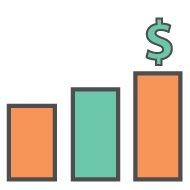

<!--
  Generated template for the MenuPage page.

  See http://ionicframework.com/docs/components/#navigation for more info on
  Ionic pages and navigation.
-->
<ion-header>

  <ion-navbar>
    <ion-title>Menu</ion-title>
    <ion-buttons end>
      <button ion-button (click)="logout()" icon-only color="laranja">
        <ion-icon name="log-out"></ion-icon>
      </button>
    </ion-buttons>
  </ion-navbar>

</ion-header>


<ion-content padding class="content">
  <ion-grid>
    <ion-row>
      <ion-col col-4 text-center>
        <!--<ion-icon style="zoom: 2.0" name="unlock"></ion-icon>-->
        
        <p>Corrente</p>
      </ion-col>
      <ion-col col-4 text-center>
        
        <p>Poupança</p>
      </ion-col>
      <ion-col col-4 text-center>
          
        <p>Pagamentos</p>
      </ion-col>
    </ion-row>

    <ion-row>
      <ion-col col-4 text-center>
        
        <p>Cartões</p>
      </ion-col>
      <ion-col col-4 text-center>
          
        <p>Empréstimos</p>
      </ion-col>
      <ion-col col-4 text-center>
          
        <p>Investimentos</p>
      </ion-col>
    </ion-row>

    <ion-row>
      <ion-col col-12 text-center>
        
        <p>Segurança</p>
      </ion-col>
    </ion-row>
  </ion-grid>
</ion-content>
